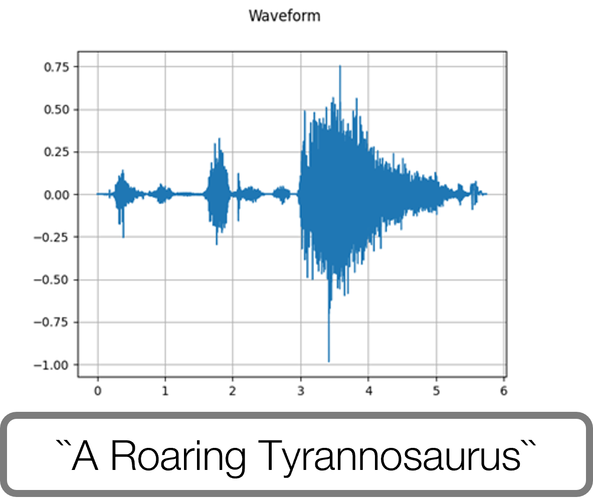

Abstract
We present StegaNeRF, a method for steganographic information embedding in NeRF renderings. We design an optimization framework allowing accurate hidden information extractions from images rendered by NeRF, while preserving its original visual quality.
We perform experimental evaluations of our method under several potential deployment scenarios, and we further discuss the insights discovered through our analysis.
StegaNeRF signifies an initial exploration into the novel problem of instilling customizable, imperceptible, and recoverable information to NeRF renderings, with minimal impact to rendered images.
TL;DR: An initial exploration into instilling customizable, imperceptible, and recoverable information to NeRF renderings.

Results
Single-Scene Steganography
Applying our StegaNeRF pipeline on the selected scenes respectively. Note that: i) The embedded information is hidden in the residual error of StegaNeRF renderings against the initial ones. ii) The recovered customized information is varying slightly.
Multi-Scene Steganography
Applying our StegaNeRF pipeline on multiple scenes at once.
Multi-Modal Steganography
Applying our StegaNeRF pipeline to embed multi-modal information. Please see the video below for detailed exhibition.
